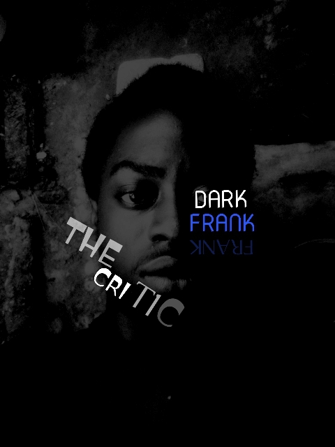

Hey y’all welcome back to the best blog you’ve been on. Yh I haven’t written shit in a long while. I travelled and also had exams and some personal stuff to sort. Alright (let’s get back to it)!
Ok now imagine someone that’s a realist and very close to you. I mean he’s always around you, questions every action you take, counters everything you say, he just thinks entirely different from you. What are you going to do about it? I know some of you are thinking I’ll just cut the person off my life (Hahaha … evil laughs) but here’s the plot twist. This fella don’t lives in your head and you can’t ever get him out. He is more like an alter ego with super powers. I mean powers to actually take over the real you.
Yh that’s him DARK FRANK. I gave him that name about a year after he showed up. At first when I discovered him I hated him so much. He reminded me of every screw ups and fuck ups I made. He was even some sort of critic living up in my own head.

But as time passed on, I discovered ways to handle our relationship. I got to realize that he was me that wasn’t me.
(I don’t know if you get it and I knew when I should let him out. Sometimes when taking certain kind of decisions, sometimes when dealing with certain types of people.)
To conclude I’ll say I’ve learned to manage his excesses and even turned him into a companion.
The end.
Yh, thanks for reading another real chapter of my life. You can check out more articles from the menu.